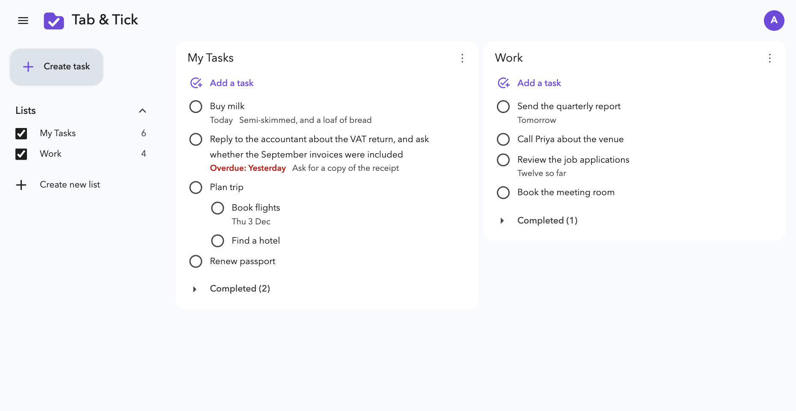

A to-do list as fast as you can type
Press Enter for the next task, Backspace to join two, and tick things off. Works with Google Tasks, so your list is the same everywhere.

- Keyboard first. Split, join, reorder and indent tasks without the mouse.
- Undo. Deleting and completing can be undone for seven seconds.
- The details too. Lists, subtasks, notes, due dates and dark mode.
- No server of its own. Your tasks go between your browser and Google.